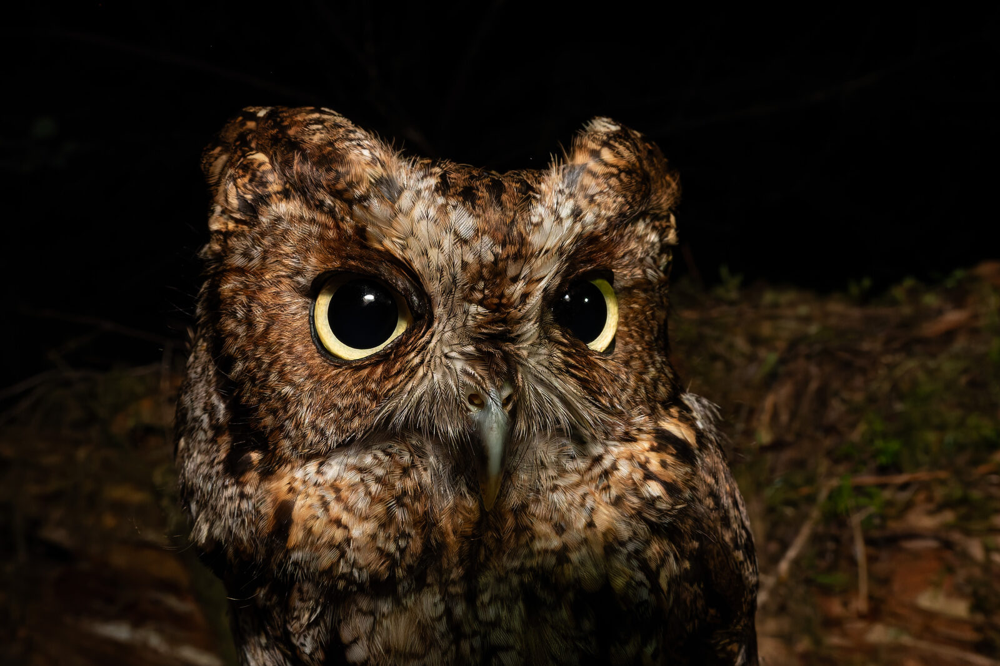
** IN PROGRESS ** This call dictionary is currently under construction and is a collaboration between the biologists whom study Western Screech-owls across British Columbia, Canada.
More info to come.
Both male and female adult Western Screech-Owls can sing. Males often sing at a lower frequency (550-750 Hz), whereas females sing at a higher frequency (800-900 Hz). Males sing more often than females and sing to defend territory and advertise to females. This is the most common and easily recognised of their calls and can be heard most regularly during the breeding season from February through June, but can often be heard at other times of the year as owls delineate their territorial boundaries. Females will sing less frequently and most commonly as a part of a male/female duet or in territorial defense.
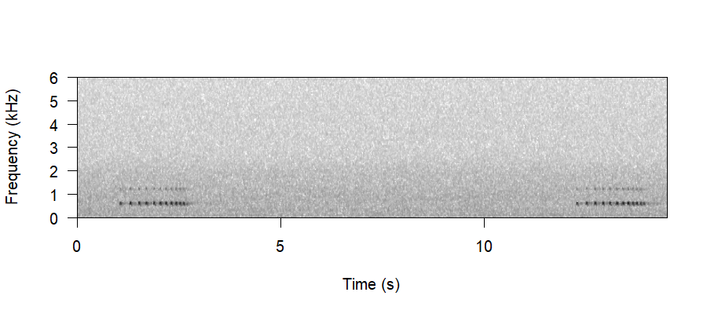
Both males and females will give a double-trill as a more aggressive form of their song, sometimes heard in response to call playback.
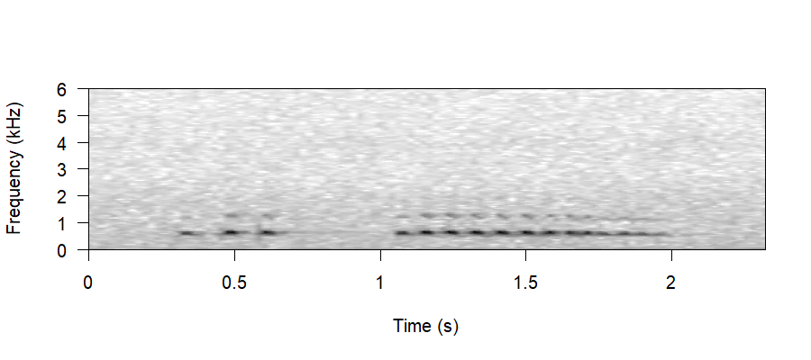
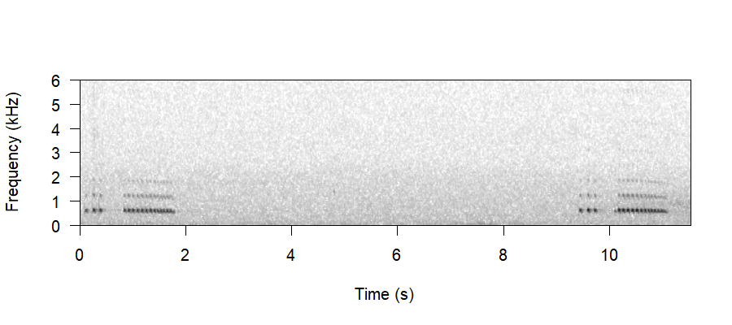
Barks are loud, short bursts with lots of harmonics, and are usually a sign that an owl is agitated. They’re typically heard from the female once the chicks are a little older or have fledged; however, they can occur whenever an owl is agitated, often in response to a predator.
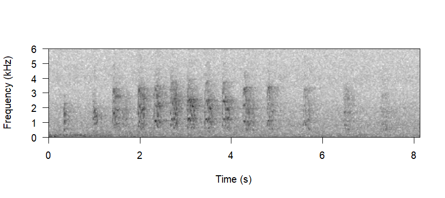
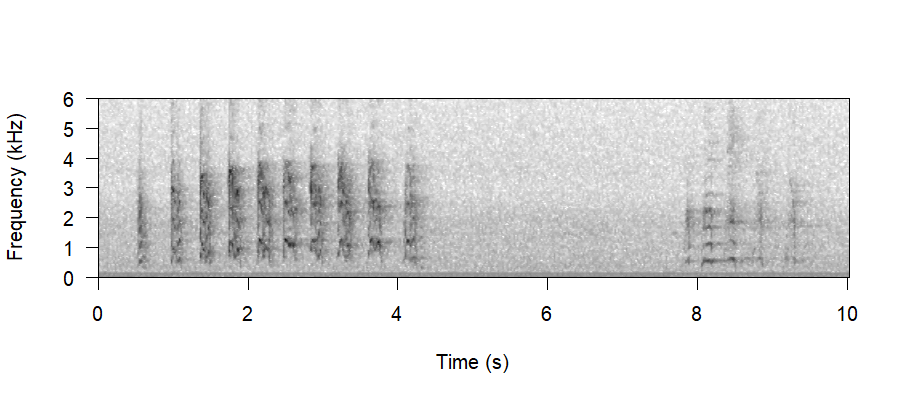
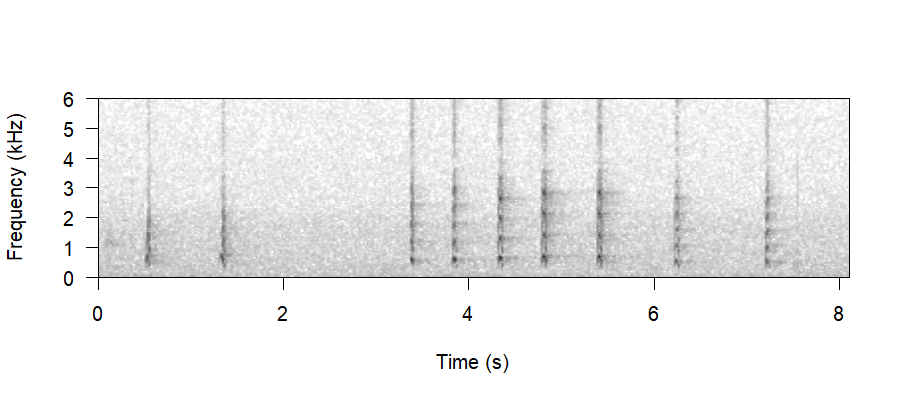
Begging is a form of demand. Often begging is a bid for affection or food. Although males have not been observed begging, they likely can. Both adult female owls and chicks will beg frequently during the breeding season. Chick begging progresses as they grow, and chicks will continue to be distinguishable from adult female begging until 2-3 months after they are fledged. Once owls have matured in the fall, they become unrecognisable from adults.
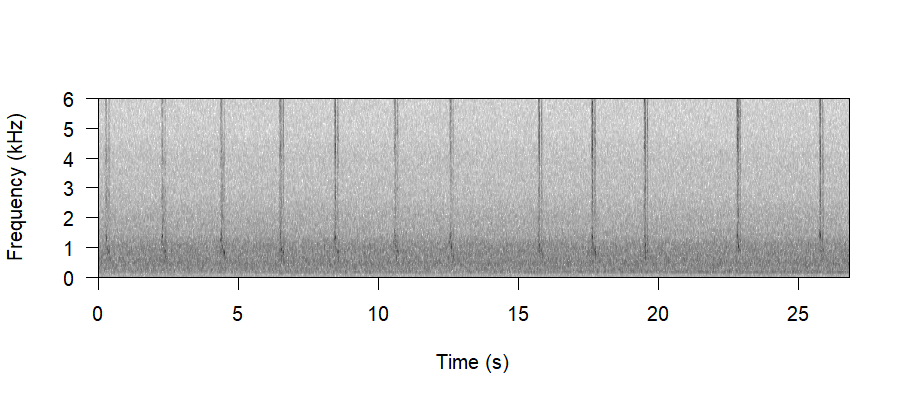
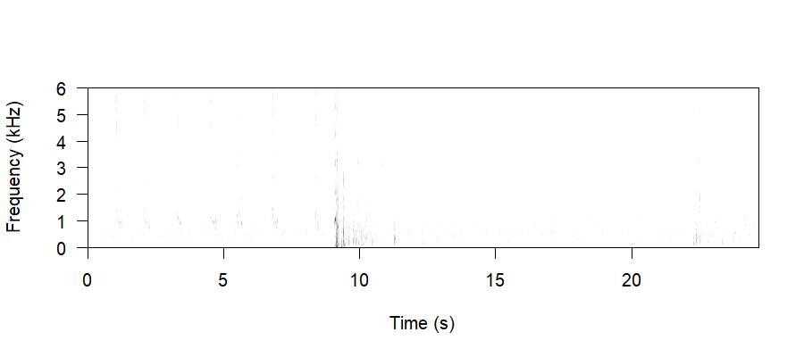
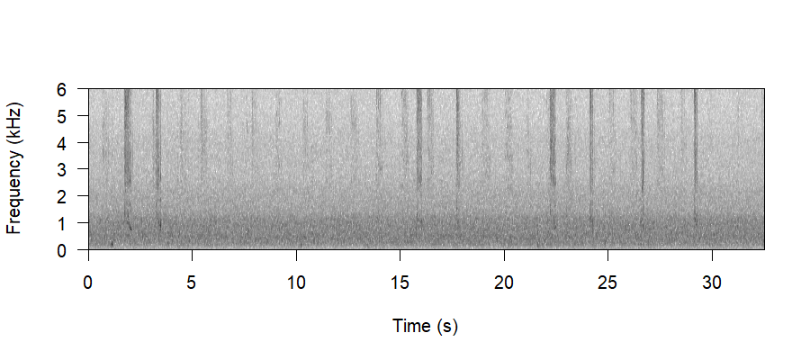
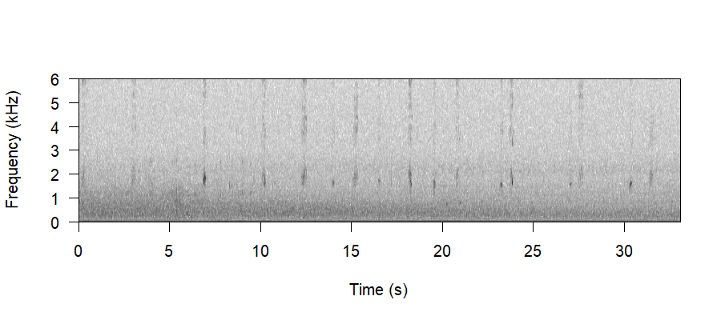
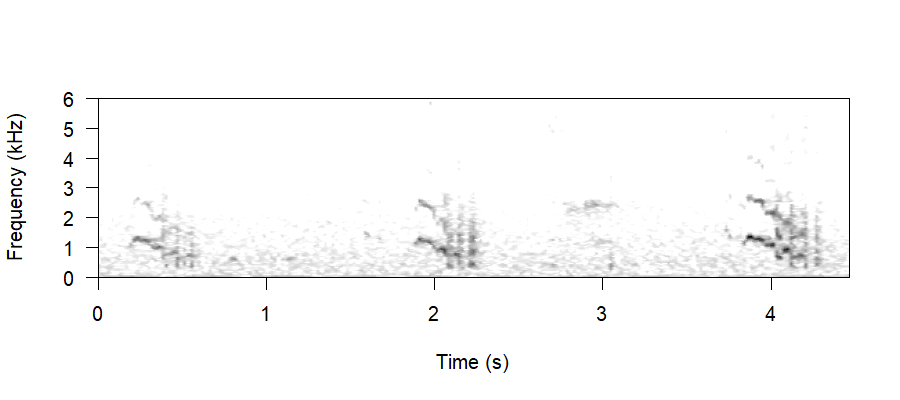
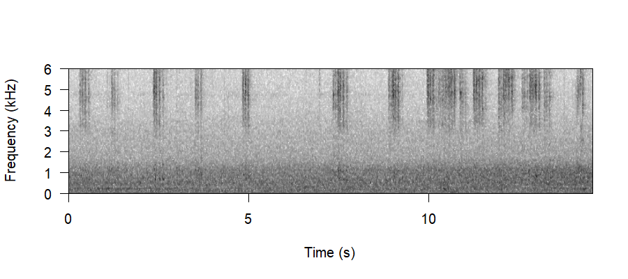
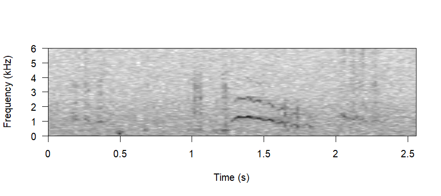
Food delivery calls are unique and highly context-dependent. They have only ever been observed in relation to prey deliveries to the nest; however, they may also be used as a form of intimate contact call, but this has not been looked at. They often consist of short staccato notes, much like morse code.
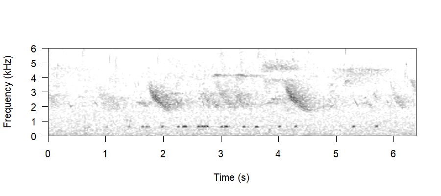
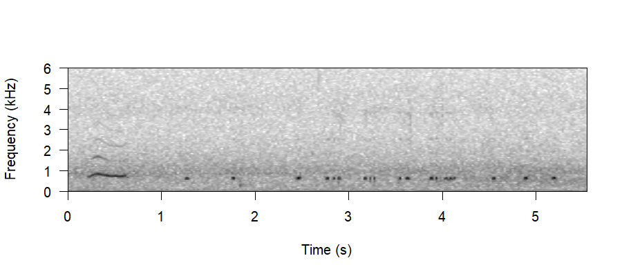
Begging is a form of demand. Often begging is a bid for affection or food. Although males have not been observed begging, they likely can, but both adult female owls and chicks will beg frequently during the breeding season. Chick begging progresses as they grow and chicks will continue to be distinguishable from adult female begging until 2-3 months after they are fledged. Once owls have matured in the fall, they become unrecognisable from adults.
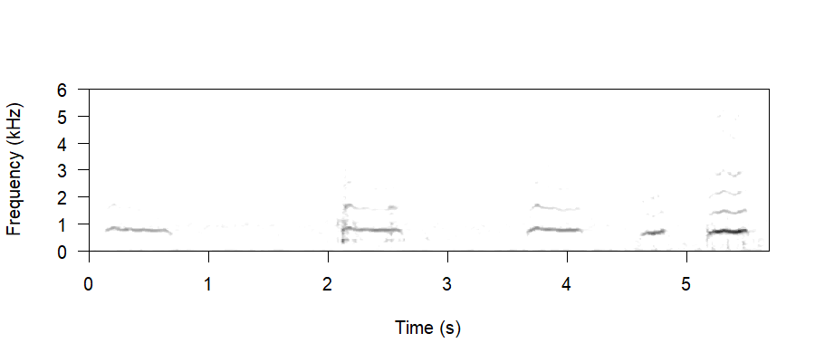
Drumming is most often heard from the male prior to copulation. In some contexts, owls have also been heard drumming from within the nest cavity. Drumming does not have a set duration but can continue for several minutes and consists of short, evenly measured notes, often not broadcast loudly. Most often the male will drum when the female is nearby, but drumming has been observed in other contexts as well. The context of female drumming is less clearly understood.
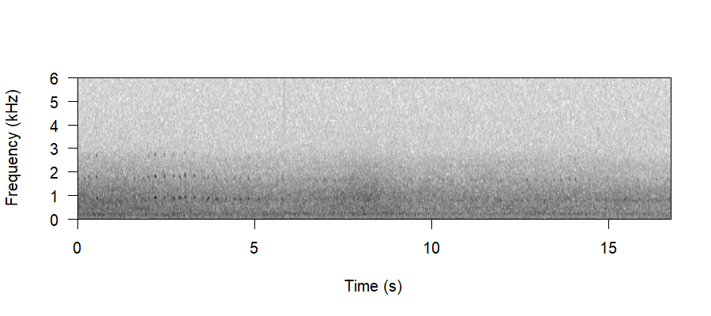
There are a slew of less frequently heard vocalisations - these are used in extreme situations, or are so intimate between owls that they are very rarely heard by observers. These can include calls associated with pain, bill clacking (often heard as a defense or in situations of heightened aggression), and more intimate contact calls between adult owls or between parents and offspring.
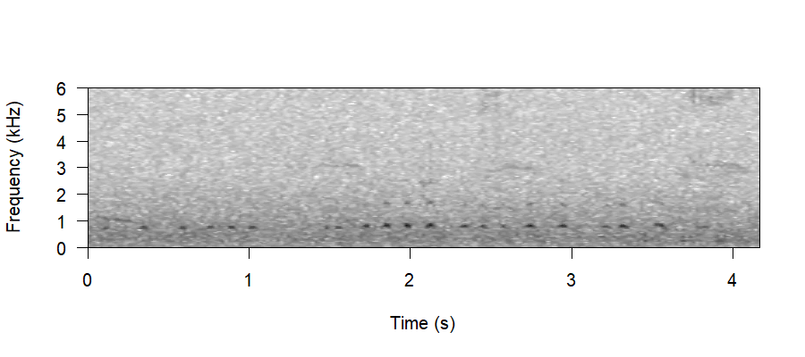
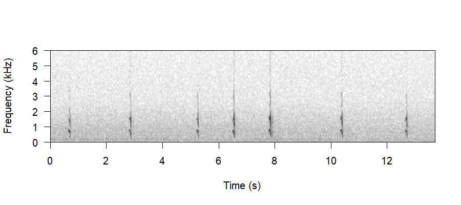
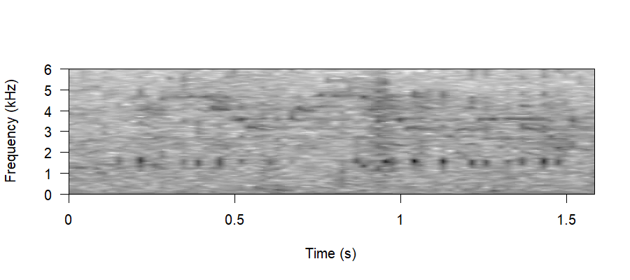
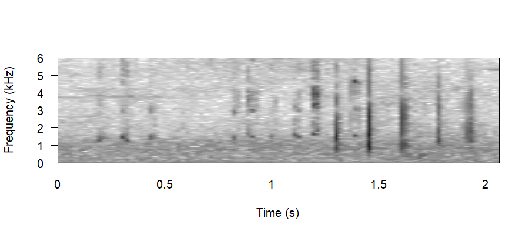
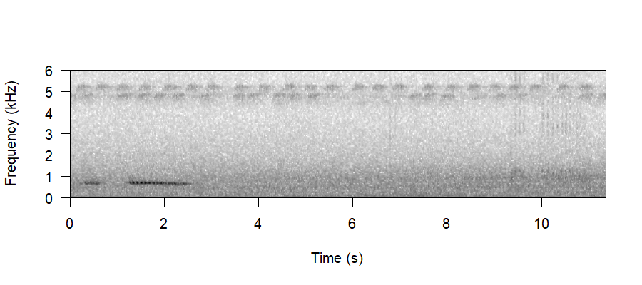